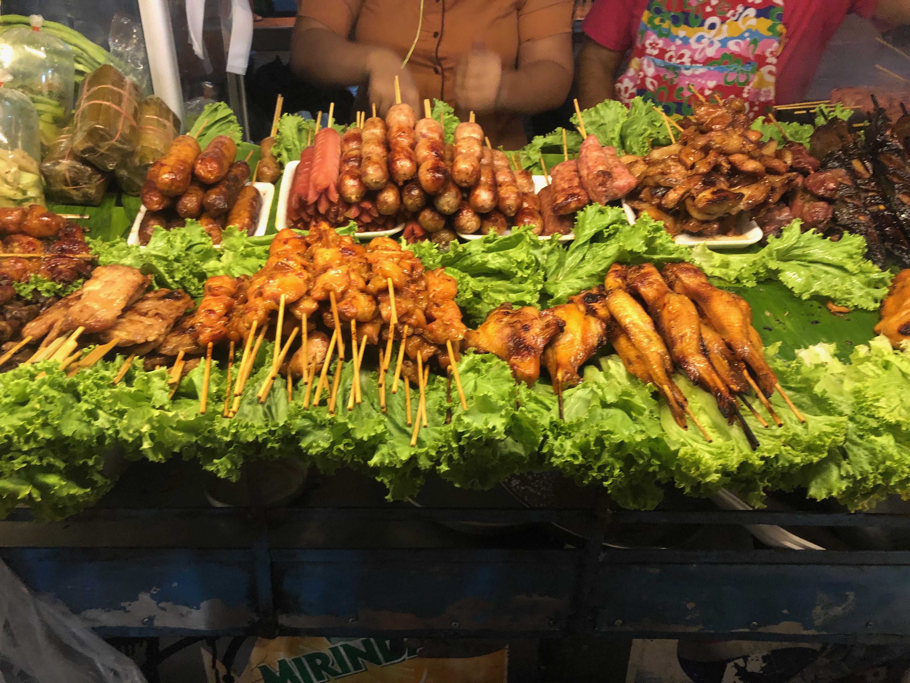

"My wife and I love to travel, below are 3 of my favorite places we've been to."
- Aruba
- Thailand
- Antarctica
We taveled to Aruba for our honeymon. We were married in 2017 but didnt take our honeymoom until 2018. Aruba is the quintessential island paradise. Beautiful beaches, snorkeling, and freindly people.
Thailand was another incredible palce we traveled to. We traveled the southern portion of Thailand. Starting in Bankok we also went to Phuket, and KoPhiPhi. Most memorable was the food! The street food and markets were incredible! 
Easily one the most unique place I have traveled too was Antartica. Although I say traveled, I was working during this trip. A small price to pay to see such an amazing place. Specifically I was working at McMurdo Station.- I worked as a Sous Chef, Overseeing one shift, feeding the station of about 1000 people. Some of my coworkers back home wrote in to the local news station. They did a short story and feature on the morning news!